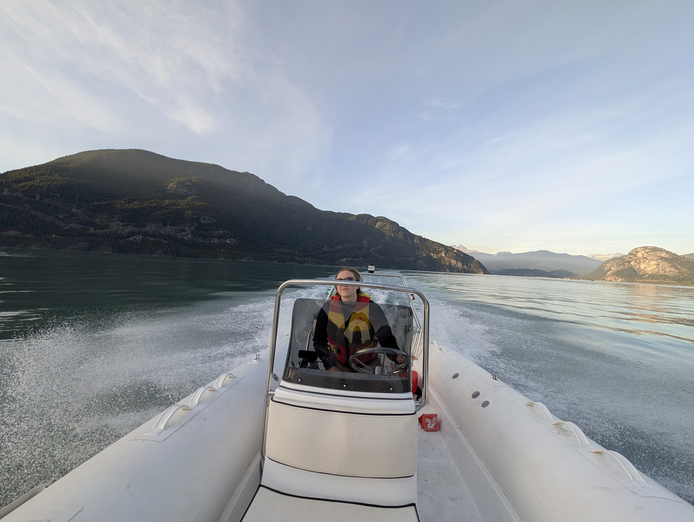

Drive the Sea to Sky Highway and you see Howe Sound as a strip of blue far below. From a boat, it turns into something else: a fjord scattered with forested islands, each with its own character. Here's a quick guide to the islands you'll see from the water.
Anvil Island
Anvil Island is the one everyone notices: a steep, forested island with a distinctive peak that gives it its name. Captain George Vancouver named it in 1792 because the summit reminded him of an anvil. It sits in the middle of the Sound, roughly across from Porteau Cove, and looks dramatic from almost every angle.
Anvil is mostly private and forested, so most people enjoy it from the water. It's a regular backdrop on our sunrise and sunset trips from Porteau Cove.
Gambier Island
Gambier is the largest island in Howe Sound, and one of the least developed. There's no road connection to the mainland and no car ferry, which keeps it quiet: forest, a scattering of cabins and summer camps, and long, sheltered bays. Halkett Bay Provincial Marine Park on its southeast side is a popular anchorage for boaters.
Bowen Island
Bowen is the most populated island in the Sound, and the easiest to visit: a short BC Ferries ride from Horseshoe Bay. It has a small village at Snug Cove, cafés, walking trails and lakes. From the water, its rocky shoreline and little coves are lovely to cruise past.
Keats Island
Keats sits near the western shore of the Sound, close to Gibsons. Plumper Cove Marine Provincial Park, on its western side, has a sheltered cove, a beach and forested trails, and is a favourite with boaters and kayakers.

The smaller islands
Further south, the Sound is dotted with smaller islands and islets, many of them private or protected. They're great for spotting harbour seals hauled out on the rocks and eagles in the treetops. Every trip is a little different depending on where the wildlife is. See our Howe Sound wildlife guide.
How to see the islands
- Howe Sound Wildlife Tour (2-3 hours, $375 for up to 3 guests): the sea walls, waterfalls and wildlife of the upper Sound.
- Half-Day Howe Sound Explorer (4-5 hours, $625 for up to 3 guests): time to reach the islands, coves and beaches. Tell us what you want to see.
- Full-day and custom charters: multi-stop itineraries and remote drop-offs, quoted per trip.
- Skipper yourself: PCOC holders can rent our RIB. See boat rentals.
Departing from Porteau Cove saves about 20 minutes of driving from Vancouver and starts you closer to the islands.
Respect the islands
Much of the shoreline in Howe Sound is private land or First Nations territory, and the marine parks are protected. Land only where you're allowed, give wildlife plenty of space, and leave no trace.
Frequently Asked Questions
What are the main islands in Howe Sound?
The best-known islands are Bowen, Gambier, Keats and Anvil, plus many smaller islands and islets in the southern part of the Sound.
What is the largest island in Howe Sound?
Gambier Island is the largest island in Howe Sound. It's mostly undeveloped and has no road connection to the mainland.
Can you take a boat tour to the Howe Sound islands from Squamish?
Yes. The Half-Day Howe Sound Explorer (4-5 hours) has time to reach the islands, coves and beaches, and full-day custom charters can include drop-offs. Departures from Porteau Cove get you closer to the islands.
Plan Your Howe Sound Trip
A local captain, a private boat and the best of the fjord. Call (604) 849-8898 or get in touch to check dates.